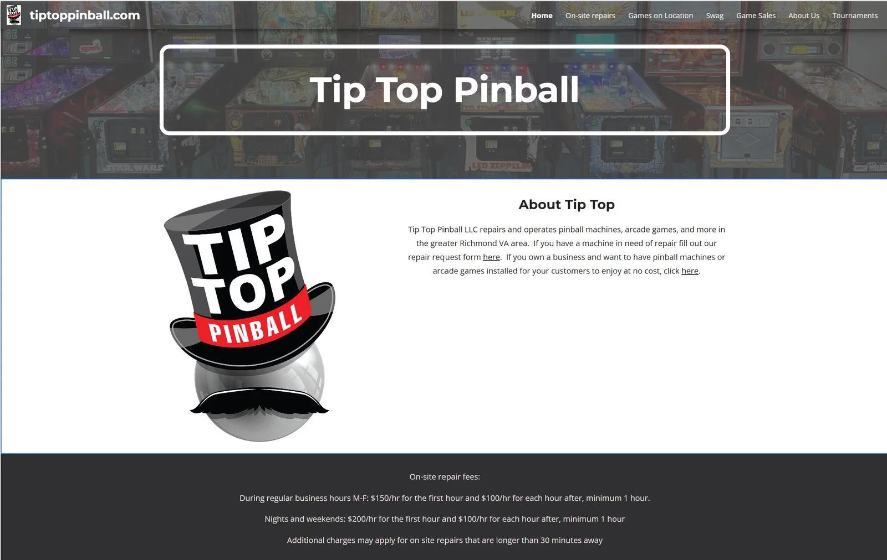
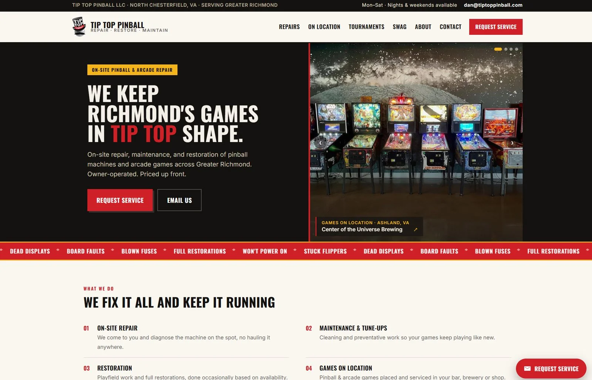

Design & development
Make the service clear.
The homepage leads with the repair offer, explains the faults the shop handles and gives customers a direct way to request service.
Client website / Tip Top Pinball
I redesigned and launched Tip Top Pinball’s website, bringing its repair services, local coverage and service requests into one focused experience.
Before & after


The work
Tip Top Pinball repairs pinball and arcade machines around Richmond. I carried the project from the existing page through a new design, launch and continued maintenance.
Design & development
The homepage leads with the repair offer, explains the faults the shop handles and gives customers a direct way to request service.
Content & local search
I wrote service-area content for Henrico, Chesterfield and Ashland, added pages for games on location and machine sales, and configured the Google Business Profile.
Launch & upkeep
I launched the website on its own domain and provide monthly maintenance. The site uses HTML, CSS and JavaScript on GitHub Pages, with Web3Forms handling service requests.
Let’s connect
I bring design and development together to help useful ideas become working projects.